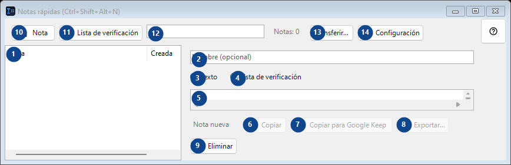
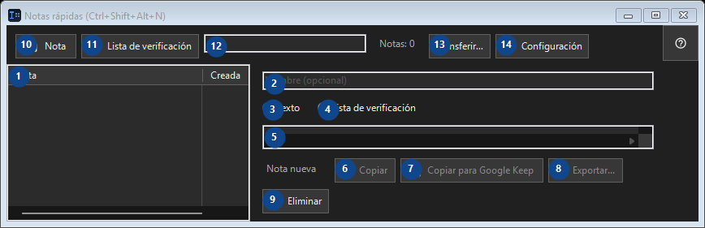

Notas rápidas (Ctrl+Shift+Alt+N)
Para qué sirve
Un pequeño bloc de notas local: ábralo con una combinación, suelte un fragmento de código o una idea, ciérrelo.


Orden de uso
Lee las explicaciones numeradas, elige los valores necesarios y continúa con el comando de la ventana.
Elementos
1. Elementos
Esta zona muestra el contenido o estado actual. Selecciona una entrada para trabajar con ella. Nota / Creada
Tus atajos2. Elige o introduce el valor de la etiqueta contigua. Revísalo antes de continuar.
Elige o introduce el valor de la etiqueta contigua. Revísalo antes de continuar.
Tus atajos3. Texto
Usa este comando para la acción indicada. Lee cualquier confirmación antes de aceptarla.
Tus atajos4. Lista de verificación
Usa este comando para la acción indicada. Lee cualquier confirmación antes de aceptarla.
Tus atajos5. Elige o introduce el valor de la etiqueta contigua. Revísalo antes de continuar.
Elige o introduce el valor de la etiqueta contigua. Revísalo antes de continuar.
Tus atajos6. Copiar
Usa este comando para la acción indicada. Lee cualquier confirmación antes de aceptarla. Este elemento no está disponible. Activa primero la función o selecciona una entrada.
Tus atajos7. Copiar para Google Keep
Usa este comando para la acción indicada. Lee cualquier confirmación antes de aceptarla. Este elemento no está disponible. Activa primero la función o selecciona una entrada.
Tus atajos8. Exportar...
Usa este comando para la acción indicada. Lee cualquier confirmación antes de aceptarla. Este elemento no está disponible. Activa primero la función o selecciona una entrada.
Tus atajos9. Eliminar
Usa este comando para la acción indicada. Lee cualquier confirmación antes de aceptarla.
Tus atajos10. Nota
Usa este comando para la acción indicada. Lee cualquier confirmación antes de aceptarla.
Tus atajos11. Lista de verificación
Usa este comando para la acción indicada. Lee cualquier confirmación antes de aceptarla.
Tus atajos12. Notas: 0
Elige o introduce el valor de la etiqueta contigua. Revísalo antes de continuar.
Tus atajos13. Transferir...
Usa este comando para la acción indicada. Lee cualquier confirmación antes de aceptarla.
Tus atajos14. Configuración
Usa este comando para la acción indicada. Lee cualquier confirmación antes de aceptarla.
Tus atajos